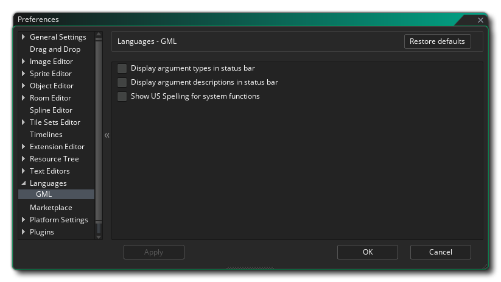

Las Preferencias de idioma se utilizan para definir cómo se mostrarán algunas de las funciones de idioma para la programación en el IDE de GameMaker Studio 2. Las opciones para GML son las siguientes:
- Mostrar tipos de argumentos en la barra de estado: esta opción se refiere a cuándo está usando sus propios scripts personalizados y ha utilizado la notación JSDoc para identificar los diferentes argumentos, etc... (consulte aquí para obtener más información). Cuando esta opción está marcada y usted ha especificado los tipos de argumento en el guión, se mostrarán en la barra de estado en la parte inferior del editor, encerrado en {}. Esto está desactivada por defecto.
- Mostrar las descripciones de los argumentos en la barra de estado: si está marcada, todas las descripciones que haya asignado a sus scripts personalizados utilizando la notación JSDoc se mostrarán en la barra de estado en la parte inferior de la ventana del editor. Esto está desactivada por defecto.
- Mostrar la ortografía de EE. UU. Para las funciones del sistema: por defecto, GameMaker Studio 2 usa la ortografía del inglés GB para funciones, por ejemplo draw_text_colour Sin embargo, es posible que esto no sea exactamente lo que está acostumbrado, por lo que puede cambiar a la ortografía de los Estados Unidos con esta opción, de modo que las funciones se vuelvan draw_text_color, por ejemplo. Esto está desactivada por defecto.